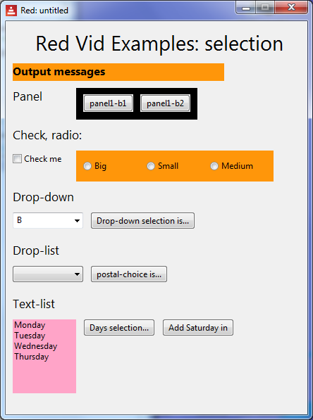

Red by Example - an accessible reference by example
index parse vid series help about links contact
Red VID Example - Choice Faces
Red [
needs 'view
file: %choice-faces.red
Author: "Mike Parr"
]
check1-changed: function [] [
print ["check1-has changed. Current state is: " check1/data]
]
drop1-selection: function [] [;;;;;;;;;ok
either drop-down1/selected = none [
print "drop-down1: no selection yet"
] [
print ["Drop-down1: " mold pick drop-down1/data drop-down1/selected]
]
]
postal-selection: function [] [
either postal-drop-list/selected = none [
print "drop-list - no selection yet"
] [
print ["Selected position in postal-drop-list: " postal-drop-list/selected]
;multiply by 2 to get corresponding integer in list
print ["Postal cost: " pick postal-drop-list/data postal-drop-list/selected * 2]
]
]
days-textlist-value: function [] [ ;-- handle no selection
either days-text-list/selected = -1 [
print "text-list: no selection yet"
] [
print ["text-list: " pick days-text-list/data days-text-list/selected]
]
]
view [
h3 " Red Vid Examples: selection "
return
mytext: text 300x25 bold orange font-size 12 "Output messages"
return
h5 "Panel" ;not really a selection, but used in radio examples here
panel1: panel black [ ;panel with 2 buttons in it
panel1-button1: button "panel1-b1" [mytext/text: "panel1-button1 clicked"]
panel1-button2: button "panel1-b2" [mytext/text: "panel1-button2 clicked"]
]
return
h5 "Check, radio: "
return
check1: check "Check me" [check1-changed]
panel2: panel orange [ ;could use function, but showing event code in face definition
panel2-radio1: radio "Big"
[print ["radios 1 2 3 are: " panel2-radio1/data panel2-radio2/data panel2-radio3/data]]
panel2-radio2: radio "Small"
[print ["radios 1 2 3 are: " panel2-radio1/data panel2-radio2/data panel2-radio3/data]]
panel2-radio3: radio "Medium"
[print ["radios 1 2 3 are: " panel2-radio1/data panel2-radio2/data panel2-radio3/data]]
]
return
h5 "Drop-down"
return
drop-down1: drop-down "B" data ["A1" "A2" "B1" "B2"]
button-drop-down1: button "Drop-down selection is..." [drop1-selection]
return
h5 "Drop-list"
return
;drop=list - NB integers are not shown on-screen, but remain is the list
postal-drop-list: drop-list data ["Basic" 33 "Second-class" 40 "Priority" 99]
postal-button: button "postal-choice is..." [postal-selection]
return
h5 "Text-list"
return
days-text-list: text-list pink 90x110 data [
"Monday" "Tuesday" "Wednesday" "Thursday"
]
days-button: button "Days selection..." [days-textlist-value]
button-add-sat: button "Add Saturday in" [append days-text-list/data "Saturday"]
]

|